Free to forkNo licence and no copyright claim: build this game under your own name, or lift one idea from it. Why?
Game overview
A fox ate every chicken on a farm. The government has responded with two tank platoons, an artillery battery, a drone squadron and you. Human Apex is a singleplayer military sandbox comedy about answering the animal kingdom's misdeeds with wildly disproportionate force.
Each operation starts with an incident in a newspaper and ends with a fenced-off forest, field or beach full of craters. In between, you command heavily armored soldiers, drive the tanks, fly the helicopters and call in the artillery, in whatever mix you like. The animals run, hide, bluff and fight back, and none of it ever really threatens you.
It's not a challenge game and doesn't pretend to be. It's a toy for feeling enormously powerful and laughing at how unfair the fight is, played like a singleplayer Battlefield 2 with Mass Effect 2's squad commands.
Target audience
Players who unwind by blowing things up in a sandbox: an evening of Just Cause, the vehicles of Battlefield, the slapstick of Goat Simulator. They come home tired or angry and want to burn it off and laugh, not be tested.
They're frustrated by shooters where the player is always outnumbered and one mistake means a reload.
The controls are standard shooter controls plus a few command keys, and nothing needs precision or quick reflexes.
Game's purpose
Power and release: being the overwhelming force for once, and burning away anger at things nobody can control.
Silliness and play: the absurd mismatch between a fox and an artillery battery, played completely straight.
Safety, celebrated: humans spent almost all of their history as prey. This is the victory lap.
It avoids draining rest and autonomy: you can't fail, every tool is open from the start, and a thermal drone means you never spend an hour hunting for the last wolf. The joke is the overreaction, so the animals are cartoon creatures that go down in puffs of fur and feathers, never anything grisly.
Core concept
Military shooters usually sell power and deliver scarcity: limited ammunition, enemies who outnumber you, difficulty that rises until you fail and reload.
Human Apex turns that inside out. You are the overwhelming side, the opponents can't kill you, and the whole arsenal is yours from the first operation.
What's left is a sandbox with a shopping list: a fenced zone, a list of culprits, and every toy the military owns. How you clear the list is your call.
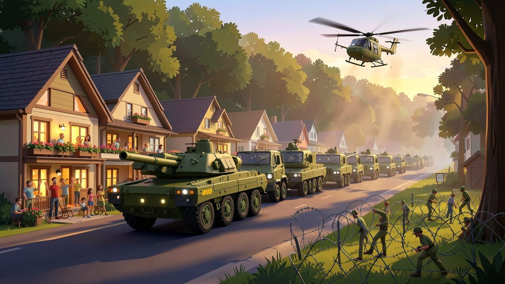
"Every operation answers a letter from a town that's had enough, and the town turns out to watch the convoy roll in."
Lore and story
A very long grudge
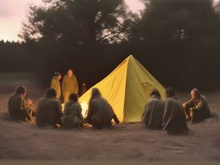
For almost all of human history, people were on the menu. Our ancestors huddled around fires while wolves circled in the dark, lost children to big cats, livestock to foxes and whole villages to fevers carried by insects. Territory, hunger or plain bad temper: the animal kingdom had the upper hand for a very long time.
It doesn't anymore. Fully equipped humans are now so absurdly outmatched against any animal that the fight is a joke, and the game is that joke told at full volume.
The opening
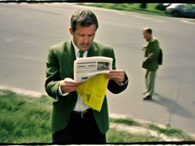
The game opens on a newspaper: a wolf wandered into the suburbs and attacked a boy walking home, having "identified him as valid prey". Two hands crumple the page. The camera turns to the reader, a man in a suit with a controlled, disgusted look on his face, and a caption arrow names him: the Prime Minister. His eyes begin to glow red.
A gavel comes down. In a barracks briefing room, a stern officer taps a chalk drawing of a wolf. A rifle is loaded with great ceremony. Rows of soldiers with glowing red eyes walk calmly past the camera, then into the woods. Behind them, a tank plows through the undergrowth, engineers string barbed wire along the treeline, a drone's thermal camera finds the pack, and an artillery piece raises its barrel and fires. Fade to black. Title.
The directive
From that day on, the law is simple: any animal that harms a citizen answers to the armed forces. Every town in the country can write in, and every letter gets the full treatment, whatever the offense: a mauled hiker, a bitten triathlete, a goat that headbutted a man off a cliff, a deer that dropkicked a kid.
The job right now
Open the next case file, read what happened and who did it, and take the whole army there. The animals are waiting inside the fence. They have no idea what's coming.
Controls and interface
You play in first or third person as any unit in the operation, and you can jump into any other at any moment: a soldier, a tank, a helicopter gunner, a drone operator or an artillery spotter. Every unit is strong enough to handle things alone, so commanding the rest is a convenience, never a requirement.
Move
W A S D
Move, or drive and fly
Shift
Sprint, or boost
Space
Jump, or climb
E
Enter or leave a vehicle
Fight
Mouse
Aim
Left click
Fire
Right click
Aim down the sights, or zoom
1 – 4
Switch weapon or vehicle gun
G
Throw a grenade
Command
Q
Order your squad to the pointer: move, attack or flush out, by context
Z / X
Hold position, or follow me
C
Support wheel: artillery, airstrike, drone sweep, smoke
Take over
Tab
Operation map (time stops): jump into any unit
T
Thermal view of the culprits still at large
Esc
Pause
The HUD carries the shopping list: each culprit species and how many are left. When the last one is dealt with, the operation can end, or you can stay and finish redecorating the area.
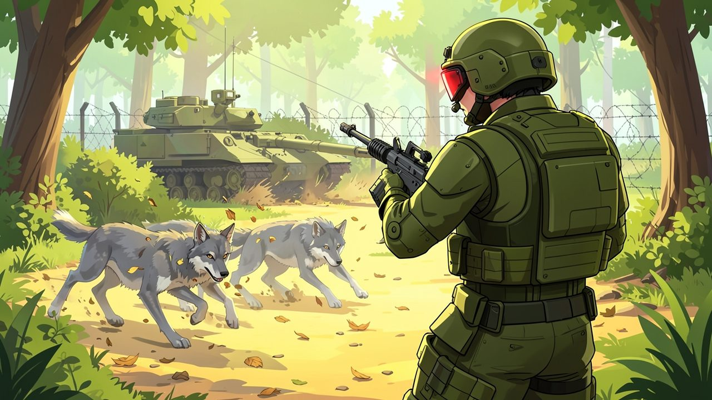
"The wolves can knock a soldier over or stun him for a moment. They can't do anything worse."
Game layers
01 · Moment-to-moment
Inside the fence
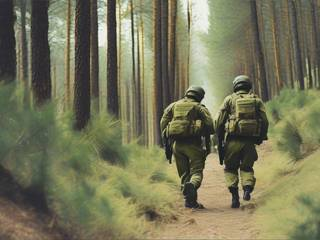
A fenced-off zone: a forest, a farm, a mountainside, a beach, a swamp. Somewhere in it are the culprits. You walk, drive or fly in with whatever you fancy, find them, and deal with them with as much or as little firepower as you like.
The animals behave like animals. A wolf pack scatters and tries to flank, a bear charges, a snake hides in the grass, a goat climbs where tanks can't. They yelp and flee, bluff and fight back, and the best they can do is knock a soldier on his back.
02 · Low metagame
A case file
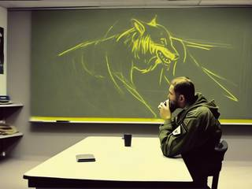
Each operation is one case file, and every case file runs the same proud sequence:
The incidentA headline in the local paper.
The briefingThe culprits, the ground, the shopping list.
The fenceEngineers seal the area; nothing gets out.
The operationYou and the army go in.
The reportThe tally, and the town's front page.
An operation ends when the shopping list is clear. The after-action report then sets what was deployed against what it was deployed at, in all seriousness: three tanks, forty soldiers, two helicopters and an artillery barrage, for one fox.
03 · High metagame
A grateful nation
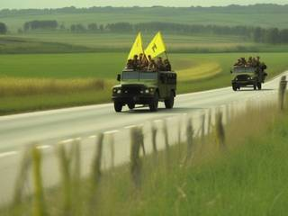
The game's home is the operations room: a map of the country with a pin for every town that has written in. You pick the next case file from there, in any order. New letters keep arriving, because every animal, every kind of ground and every kind of offense combine into new incidents, so the country never runs out of grievances.
Each finished case puts the town's front page on the operations room wall, reporting your overreaction as a triumph, and turns its pin on the map from red to green. The wall is the record of the whole campaign, and it's the funniest thing in the game to read. It doesn't buy anything.
04 · Practical game flow
One bad day, one operation
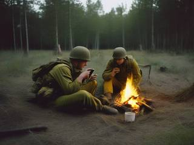
An operation takes fifteen to thirty minutes, depending on the ground and how much you enjoy the scenery. Come home, open a case file, flatten a forest, read the headline, and go to bed lighter.
The game saves inside the operation too, so you can stop whenever you like and come back to the same fence with the same culprits still hiding.
Game modes
There's one mode: answering case files. What changes from one to the next is the culprit, the ground, and which part of the arsenal suddenly makes sense. A few from the opening batch:
Culprit
The incident
The ground
The response
A wolf pack
Attacked a boy in the suburbs
Pine forest
Infantry, tanks and the artillery from the opening
A bear
Mauled a hiker
Mountain valley
A mechanized battalion and a gunship
A shark
Bit a triathlete
The bay
Patrol boats, divers and depth charges
A snake
Poisoned the village elder
Jungle village
Flamethrower squads and a bulldozer
A deer
Dropkicked a kid
Suburban parkland
Riot police in armored vans, then the army anyway
A goat
Headbutted a man off a cliff
Sea cliffs
Mountain troops and helicopter rappelling
A fox
Ate every chicken on a farm
Farmland
Everything
A mosquito swarm
Gave a village a fever
Swamp
Crop-duster jets, flamethrowers and a fog of insecticide
An owl
Carried off a family's small dog
Woods at night
Night vision, searchlights and anti-aircraft guns
Features and mechanics
The heart of it
Overkill on demand
The whole military is available for every case file from the first one: infantry in heavy armor with rifles, machine guns, grenade and rocket launchers and flamethrowers; tanks, armored cars and bulldozers; transport and attack helicopters; drones; artillery, mortars and airstrikes; boats and divers where the ground is wet.
Nothing is bought, earned or upgraded. The only question is what you feel like using, and the honest answer is usually far too much. That's the joke, and the game commits to it: the briefing treats a fox like a hostile army, and the hardware arrives accordingly.
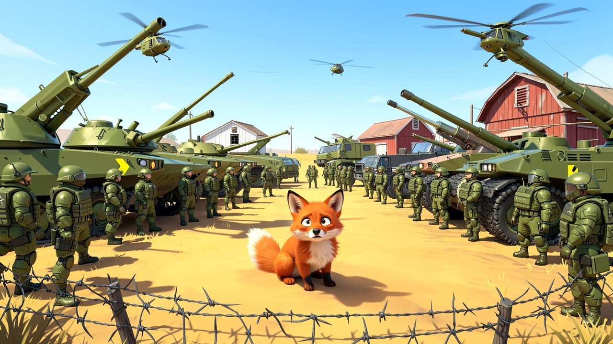
"Every case file gets the whole arsenal, whatever the culprit did. This one is a fox."
Be anyone in the operation
Switch into anything, command the rest
Every soldier, vehicle and support unit in the operation is yours to play. Ride in as a rifleman, take over the tank when the bear appears, hop into the helicopter to chase the goat up the cliff, and finish from the artillery spotter's binoculars.
Whoever you're playing can give orders to the squad around them, as in Mass Effect 2: move here, attack that, flush out that thicket, hold, follow. Everyone else carries on sensibly on their own. Each unit is powerful as a standalone, so teamwork is something you play with, not something the game demands.
No tedious searching
The fence and the thermal drone
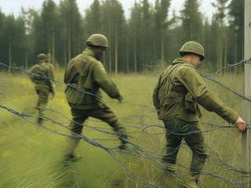
Before you go in, combat engineers fence the whole zone with cheap barbed wire. It's the game's one natural limit: the culprits can't leave, and you can't wander off into an empty countryside.
A drone's thermal camera shows where the remaining animals are hiding whenever you ask, so an operation never ends in a long search for the last snake. Finding them is quick; what you do when you get there is the fun.
Not a challenge game
Soldiers who can't lose
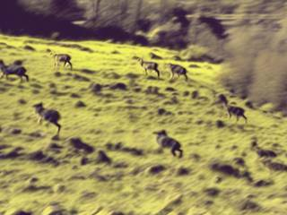
The soldiers are heavily armored enough to "eat a wolf for breakfast". An animal can knock one down, stun him or send him tumbling: a bear's swipe puts a soldier on his back, a snake bite leaves him woozy for a minute, a goat can headbutt him off a ledge into a bush. Then he gets up.
Nobody on your side dies, and no operation can fail. There's no health to manage, no ammunition to ration and no reload screen. The game's whole design is permission: to feel enormously strong for half an hour without being tested on it.
Cartoon wildlife
Animals that act like animals
Every species has its own behavior, borrowed from the real animal and exaggerated: wolves hunt in packs and flank, bears charge and stand their ground, foxes dive into burrows, snakes vanish into tall grass, sharks circle under the surface, goats climb where vehicles can't follow, owls hunt at night from the treetops, and mosquitoes come as a cloud.
They react to you the way the opening promises: they scatter in alarm, hide, bluff and occasionally try their luck. The tone is lightly absurd, so they're cartoon creatures with ragdoll physics that go down in puffs of fur and feathers, never anything grisly.
Feedback, not a score
The after-action report and the front page
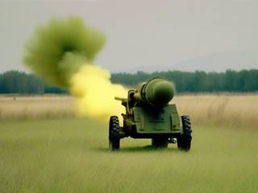
Every operation closes with an after-action report written with total military seriousness: units deployed, rounds fired, hectares of forest reshaped, culprits accounted for. The numbers are there to be laughed at, not judged against.
Then the town that wrote in gets its say, as a newspaper front page celebrating the operation like a war won. The front pages pile up on the operations room wall: the game's living history, and the clearest picture of how far out of proportion the whole country has gone.
Trivia
The opening described in the lore is in the design notes as a full shot list, camera angles included, written to be rendered as a trailer with an AI video model. The notes also mark which shots could be skipped in favor of fading straight to the title.
The notes weigh two ways to build it: a 2D top-down shooter with light strategy, or a 3D shooter in the style of Battlefield 2. They pick 3D, because it shows off how small a wolf looks next to a tank.
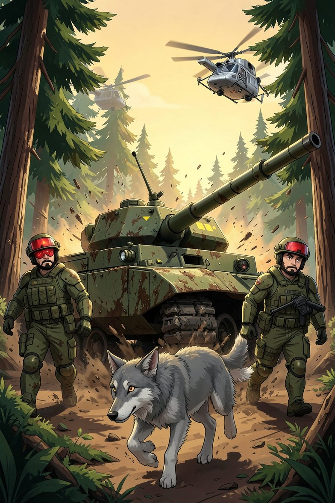
By order of the Prime Minister
Human Apex: Overreacting Justice Against Animal Kingdom
For two hundred thousand years, they hunted us. They took our livestock, our pets and our peace of mind. They thought nobody was keeping count.
Somebody was. The fence is up, the drones are airborne and the tanks are warm. Report to the briefing room: today's target has fur.